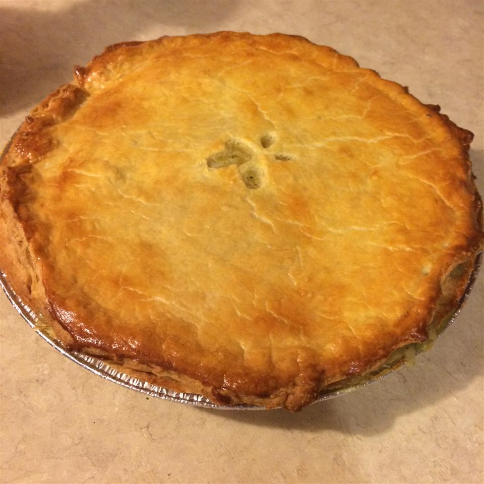

Steak and Ale Pie

Description
A steak pie is a traditional meat pie served in Britain. It is made from stewing steak and beef gravy, enclosed
in a pastry shell.
The dish is served with chips (thickly sliced potatoes fried, sometimes in beef dripping) and pale ale.
Ingredients
- 1 tablespoon vegetable oil
- 1 pound cubed beef stew meat
- 1 large onion, chopped
- 1 (1 ounce) package dry mushroom gravy mix
- 1 cup water
- 1 teaspoon Worcestershire sauce
- 1 pinch salt and pepper to taste
- 1 sheet frozen puff pastry, thawed
- 1 egg
- 1 tablespoon water
- Step 1
Heat the oil in a large skillet over medium-high heat. Add beef stew meat, and cook until browned on the
outside. Add the onion; cook and stir until tender, about 5 minutes. Stir in the mushroom gravy mix and 1 cup of
water. Season with Worcestershire sauce, salt, and pepper. Turn heat to low, and simmer for 20 to 30 minutes.
- Step 2
Preheat the oven to 400 degrees F (200 degrees C). Transfer the beef mixture to a casserole dish. Roll out the
puff pastry to cover the top of the casserole dish. Press edges onto the rim of the dish to seal. Whisk together
the egg and 1 tablespoon of water in a small cup using a fork. Brush over the top of the pastry.
- Step 3
Bake for 20 minutes in the preheated oven, until the pastry is puffed and golden brown.